新手从零软路由系列
需求背景
9012年了，对于像我这种，平时没事会去折腾一些硬件。比如一些装机、数码之类的。关注了很多新鲜的东西，当然其中一个就是软路由。
在了解软路由之前，可以去了解一下软路由具体是干嘛的？完了再了解了解下文中具体配置相关的东西。
需要准备
- 一台软路由设备
- 底层安装好ESXi或者LEDE
- 至少拥有两个物理网口
- 内存按个人实际分配使用，如果纯软路由场景2~4G足以；如果辅助需要安装其它操作系统，如Linux或者Windows乃至黑苹果等，等同划分需要扩展相应的内存
- Mikrotkit OS镜像
- OpenWRT镜像
背景知识
Mikrotkit OS
OpenWRT
自编译OpenWRT
初始编辑可参考如下博客文中所述：编译Lean的Openwrt固件全攻略
基本上没有什么问题，可以通过公有云编译，也可以通过虚拟机本地编译都可以。
自编译要注意下面几个问题：
- 极端情况，编译失败可能是因为网络问题
- 自编译，磁盘空间需要保留足够，目前初略看，至少得50G。曾经本地编译过一次，居然最后是因为磁盘空间不足导致最终编译失败了。
- 如果本地编译出现失败，又无法确定是否是网络原因。采取反证法，到公有云上再编译，如果还是出现同样的失败错误。注意了 很有可能是你选择的LUCI插件冲突了，少选几个再重新试一下看看。
怎么在ESXi中用
编译好的文件，默认配置会输出两个文件，如下所示：
- openwrt-x86-64-combined-squashfs.img
- openwrt-x86-64-combined-squashfs.vmdk
但是这俩文件，是无法直接在ESXi后台控制页面，通过添加虚拟机的方式使用的。这里以vmdk文件为例，通过ESXi后台自带的vmkfstools转换一下之后，就可以了。
先将上述编译好的vmdk文件，通过“数据库存储浏览器”上传到指定目录下，如下图所示：
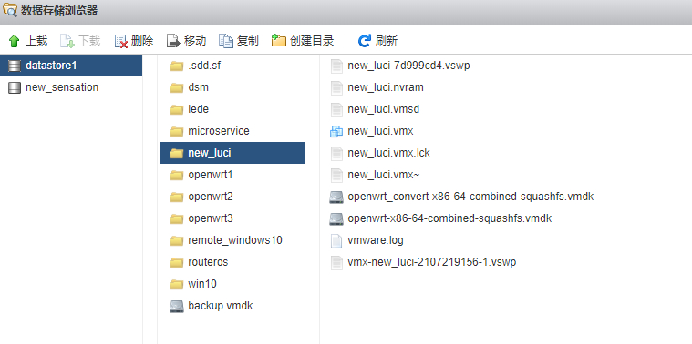打开ESXi的SSH：主机->操作->服务->启用安全的Shell
通过SSH客户端工具，远程连接到ESXi后台
cd到第一步上传的目录
- 这里注意一下：我的vmdk存放的数据仓库的名称为“datastore1”，则实际路径为：/vmfs/volumes/datastore1，以此类推
键入如下命令开始转换
1 | 语法为：vmkfstools -i [原始文件] [目的文件] -d thin |
如下图所示，转换完成：
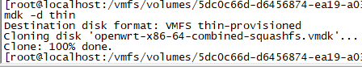
转换完成后的vmdk文件就可以直接正常通过ESXi创建虚拟机了。
安装过程
与正常安装Windows过程大体相同，将ESXi对应的ISO文件（这里我安装的是6.7U3b版本），用第三方工具写入U盘即可
这里推荐rufus，rufus官网下载最新的版本(http://rufus.ie/)，如下图所示：
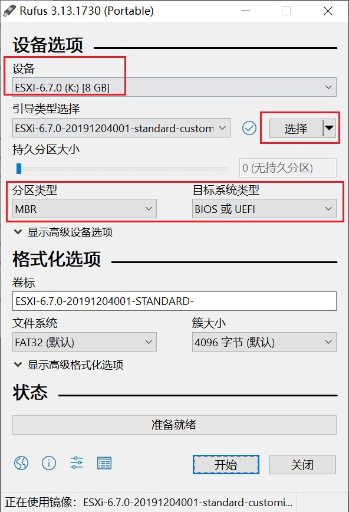
- 设备选择你的U盘，不要选错了。
- 点击选择，选择指定路径下的ESXi的ISO镜像文件
- 分区类型和目标系统类型保持默认即可，如图分别为MBR和BIOS或UEFI
- 剩下的直接点击开始即可
后续插入到目标物理机上，通过U盘启动即可。如果是裸机的话，直接插上去，开机就行了。
具体安装过程很简单，输入root密码的时候，正常输入即可。
安装完毕之后，会提示机器重启。
安装异常问题
提示Using ‘simple offset’ UEFI RTS napping policy
这种一般在较为新的主板上会遇到，尤其是强制使用安全认证模式的UEFI模式启动的模式。
我在我的Intel的NUC10i7FNH主机上遇到了这个情况，涉及安全启动运行的给关了。
一方面，我升级了这个主板的BIOS版本，具体到指定主板的厂商的官网支持都会有最新的BIOS固件，按照官网提示的步骤升级即可。
插曲：NUC10i7FNH对应的最新的固件更新说明
注意：如果你是用F7 & U盘方式更新BIOS的，不要格式化U盘为extFAT格式，BIOS会找不到的，格式化成NTFS或者FAT32都行。
官网说明：https://www.intel.cn/content/www/cn/zh/support/articles/000033291/intel-nuc.html
如下：
- (Intel PTT)Security > Security Features: Intel Platform Trust Technology: Disabled
- Boot > Secure Boot > Secure Boot: Disabled
更多关于在NUC10i7FNH下建议的BIOS设置，可以参考如下相关链接：
intel-nuc-recommended-bios-settings-for-vmware-esxi
安装时自检提示找不到网卡驱动
安装的时候提示“No Network Adapters”，正如这个提示所示，找不到网络驱动器，导致这个原因一般就是当前安装版本的ESXi要么你网卡较新，要么比较小众，官网没有相应的默认维护进ESXi驱动，此时提供两种解决方案：
- 在网上找别人封装好的驱动的ESXi的ISO镜像
- 自己通过VMWare的离线bundle包打驱动
在virten上的一篇文章介绍了在线模式的打包整合驱动的方法esxi-on-10th-gen-intel-nuc-comet-lake-frost-canyon，不推荐，因为依赖网络环境（你懂的）中间失败了，你可能又会遇到新的问题，完了来回折腾，搞了一大圈最后发现是网络问题，费时费力。但是这里面介绍的安装步骤，还是值得参考的
这里针对离线方式说明一下，用的封装命令，在下面这个网站里面有详细说明：
https://www.v-front.de/p/esxi-customizer-ps.html#download
这里安装物理机硬件如下：
- Intel NUC10I7FNH
- 网卡：I219-V
- ESXi 6.7U3b
- 内存：威刚万紫千红 32GB * 2
- SSD：恺侠 RD10 500GB
下载VMware-PowerCLI-6.5.0和ESXi-Customizer-PS
在这里贴一下两个文件的下载地址，其中PowerCLI我在百度云分流了：
VMware-PowerCLI-6.5.0：
MD5值：1B7A5378835C6158CFB63C3D10BB9E18
http://down.whsir.com/downloads/VMware-PowerCLI-6.5.0-4624819.exe
备份下载：链接: https://pan.baidu.com/s/1L-Yeq0-ohyFwQB9lFRwiGQ 提取码: tf38
ESXi-Customizer-PS：
http://vibsdepot.v-front.de/tools/ESXi-Customizer-PS-v2.6.0.ps1
下载离线6.7的bundle包
官网VMware vSphere Hypervisor 6.7
需要登录，建议提前注册一个vmware账号，注册流程略。
这里下载最新的6.7U3b版本即可，如下图所示：
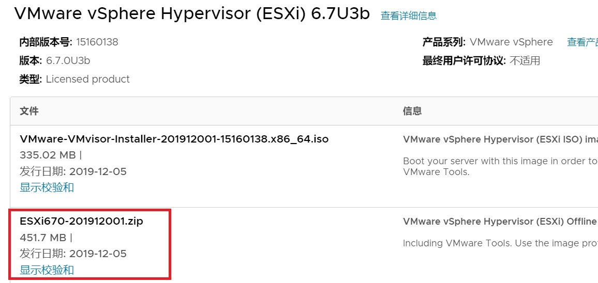
MD5值：153EA9DE288D1CC2518E747F3806F929
备用下载：
链接: https://pan.baidu.com/s/1ScNhiCr0BqKTIhJJsbgHwQ 提取码: 7j9r
下载好指定驱动
支持列表vibsdepot.v-front
比如我的NUC10i7FNH这个设备上网卡是I219-V，上面网站中没有列出，在官网有提供：
ESXi670-NE1000
开始bundle
- 在本地任一磁盘根目录新建文件夹，例如我的是在G盘，建了一个名为newesxi的文件夹，文件夹内容目录如下，把上述下载的东西放进去。
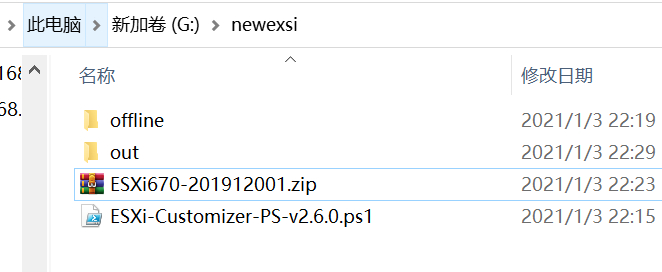 - 其中offline文件夹内，提取上述ESXi670-NE1000压缩包中的VIB文件
- 运行PowerCLI
CD到上述newesxi目录下
键入如下命令：1
.\ESXi-Customizer-PS-v2.6.0.ps1 -izip .\ESXi670-201912001.zip -load net-e1000e -pkgDir .\offline -outDir .\out -nsc
注意：上述命令中的net-e1000e就是指定网卡型号，这个型号就在上述vibsdepot.v-front网站中，有列出。
同时，如果你要 同时制作其它网卡型号，在后面添加英文逗号”,”即可。
例如：
1 | .\ESXi-Customizer-PS-v2.6.0.ps1 -izip .\ESXi670-201912001.zip -load net-e1000e,net51-r8169,net55-r8168,net-atl1e,net-r8101 -pkgDir .\offline -outDir .\out -nsc |
稍等片刻之后，看到如下提示则表示bundle完成。
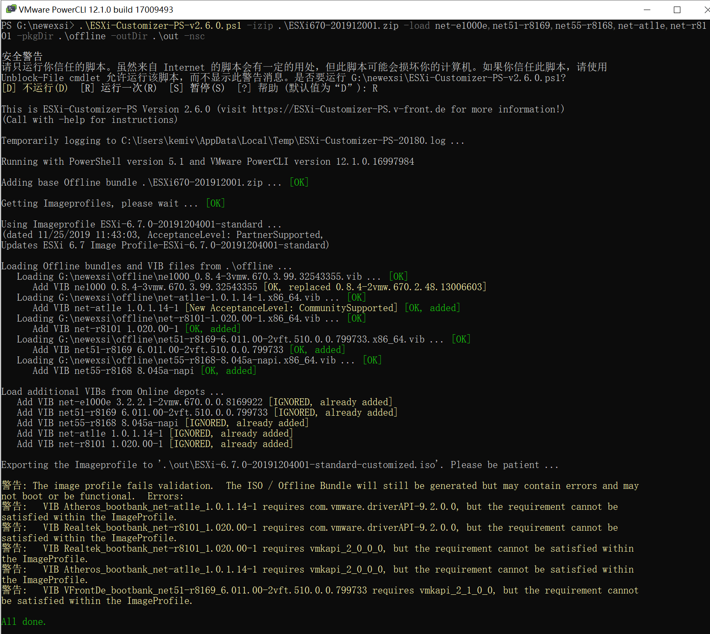
至此离线驱动镜像包就制作好了，接下来就可以正常写入U盘安装了。
这里分享自己打包好的多驱动集成ISO镜像包。
MD5值：2EC7F4417E8C233F4F36B52DF6D564CD
链接: https://pan.baidu.com/s/19aJ_FZqQLmsk5jqaNQ8EBA 提取码: yyj7
已集成驱动列表：
- net-e1000e(包含I219-V网卡)
- net51-r8169
- net55-r8168
- net-atl1e
- net-r8101
系统设置
ESXI后台设置
设置网络适配器（Network Adapters）
IPv4设置
替换ESXI登录HTTPS证书
通常在刚安装好esxi之后，默认后台登录控制台，会提示你当前访问的链接不安全的提示，就像下面那样：
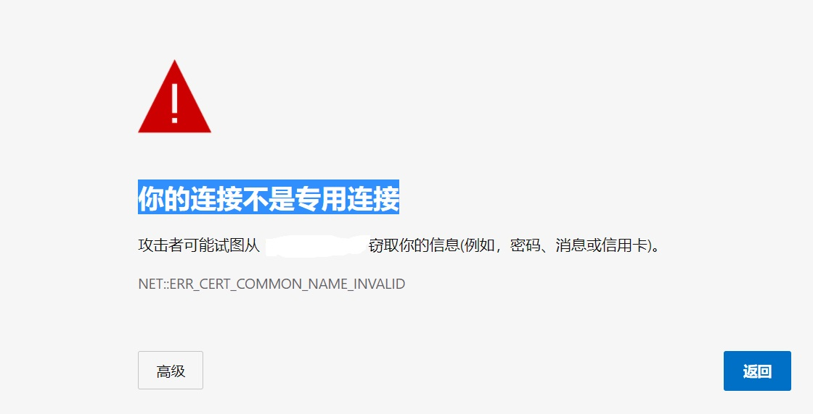
这种问题本质就是，你当前通过https访问的地址并未签发相应的SSL证书导致的。
因此，找到一个免费的SSL证书，并替换esxi后台的默认ssl证书即可。
由于我本站博客域名国内的DNS解析加速选择的是dnspod，所以这里就以腾讯DNSpod申请免费证书为例，其它国内诸如阿里云、七牛云等等，都有提供免费申请SSL证书的渠道，不过目前来看，似乎腾讯的dnspod审批的比较快。
dnspod免费的ssl证书提供商是亚信，自己本地玩无所谓的。
mkcert（推荐）
严格意义上来说，这种exsi服务器，不对公网，其实完全自签证书就可以了，不需要搞那么多费神的东西。
使用github上一个开源工具：mkcert地址
这里的自签一次是2年3个月的（主要原因是考虑到mac和ios限制），如果你想一次10年，可以使用我这个找到的 直接右键下载
- 下载下来使用命令行（管理员权限）执行下面两个命令
1
2mkcert_10years.exe 192.168.**.**【替换成你的IP】
mkcert_10years.exe -install
如下图所示：
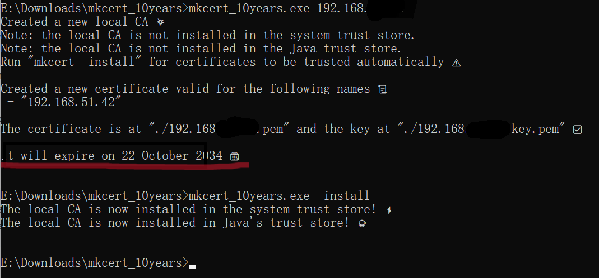
- 准备exsi证书文件
经过上述命令行执行过后，会在对应目录下生成两个文件，并依次替换（别整错了）：
- [你的ip].pem –> rui.crt
- [你的ip]-key.pem –> rui.key
- rui.crt和rui.key丢到exsi后台，路径：
/etc/vmware/ssl/ - 重启服务：
1
2/etc/init.d/hostd restart
/etc/init.d/vpxa restart - 此时再访问后台，就不会再提示ssl证书问题了
- 如果需要在其它电脑上，只需要把证书导出后，安装即可，如下图所示：
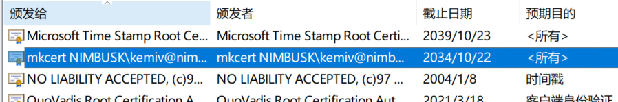
dnspod申请免费SSL证书
登录到DNSPOD控制台：https://console.dnspod.cn/
搜索SSL证书，或直接访问URL：https://console.cloud.tencent.com/ssl 如下图所示：
点击“申请免费证书”
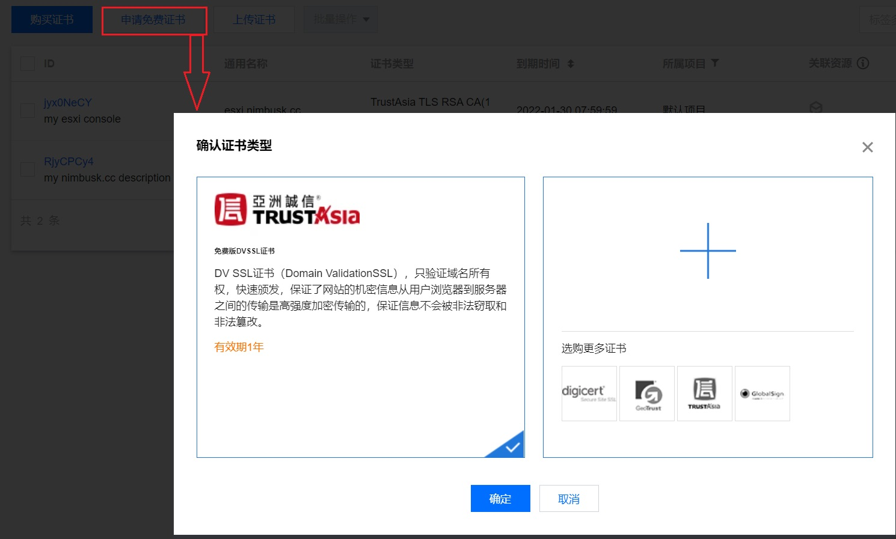
默认，点击确认即可，选择其它的ssl证书提供商，会收费。
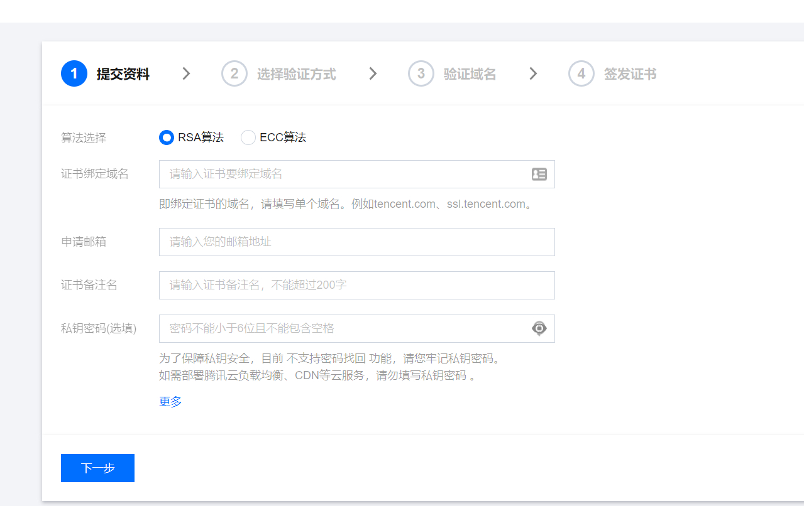
在提交资料页面：
- 算法选择：默认即可
- 证书绑定域名：填写你要申请绑定证书的域名地址，例如我的就是esxi.nimbusk.cc
- 申请邮箱：填写自己的邮箱就好
- 证书名备注：备注这个证书是绑定什么域名干嘛用的就好
- 私钥密码：自己本地玩，不需要填写
填完之后，下一步，选择验证方式：
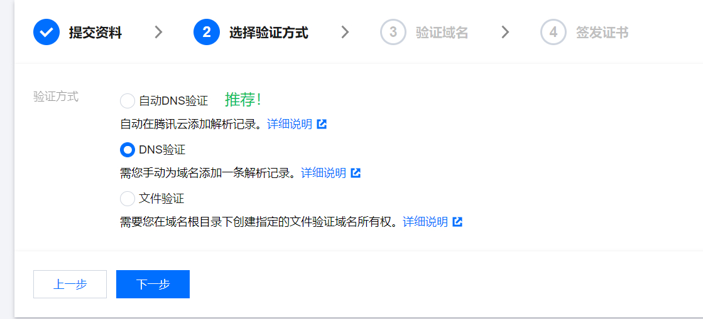
选择第一个，第一个会自动在你当前匹配的域名下增加一条TXT记录
第三步验证的时候，dnspod会验证你的解析域名下是否包含相应的记录，进而会影响你最终审核结果。
在下一步之后，验证域名步骤中，可能会显示当前顶级域名验证失败，等收到验证通过消息（邮件/短信）之后，再次点击查看域名验证状态就好。
签发成功之后，直接下载。会下载一个压缩包，等待后续使用。
替换exsi后台默认证书
将上述步骤下载下来的zip压缩包中的 nginx文件夹内的两个文件，一个crt一个key文件，均重命名为rui。
通过linux文件传输工具，将下载重命名后的文件覆盖上传的如下路径下（当然覆盖之前你也可以备份原来的俩文件）
1 | /etc/vmware/ssl/rui.crt |
覆盖替换完成之后，在SSH后台键入：services.sh restart
重启服务
之后，在浏览器，通过HTTPS域名的方式访问esxi后台即可。
当然，你在windows下浏览器下直接这么访问，可能会提示你根本无法访问，那是通过这种方式，你本地esxi后台ip是没有跟你的域名证书绑定在一起的。最简单的解决方案就是，在你windows的host文件加上一条域名解析记录即可。
完事之后，再通过浏览器https访问就好了，如下图所示：
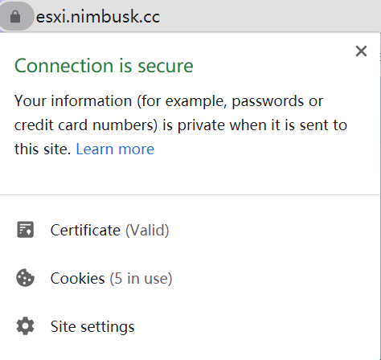
Let’s Encrypt自签
在网上找到一段脚本，先贴在这里，主要是用的linux的certbot来自签的，目前我还没有自己实践过，暂时还不知脚本的准确性如何
1 | !/bin/bash |